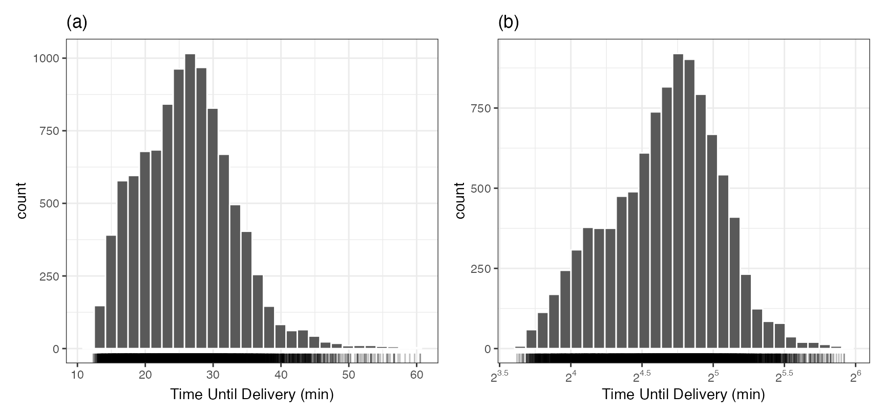
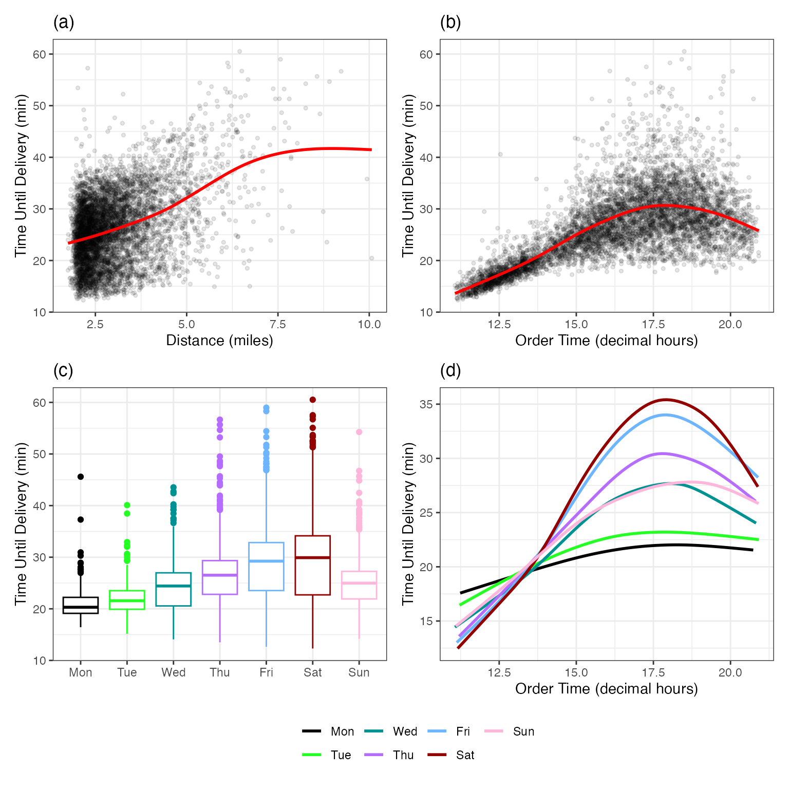
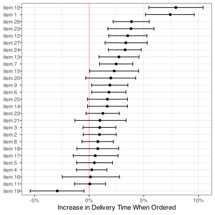
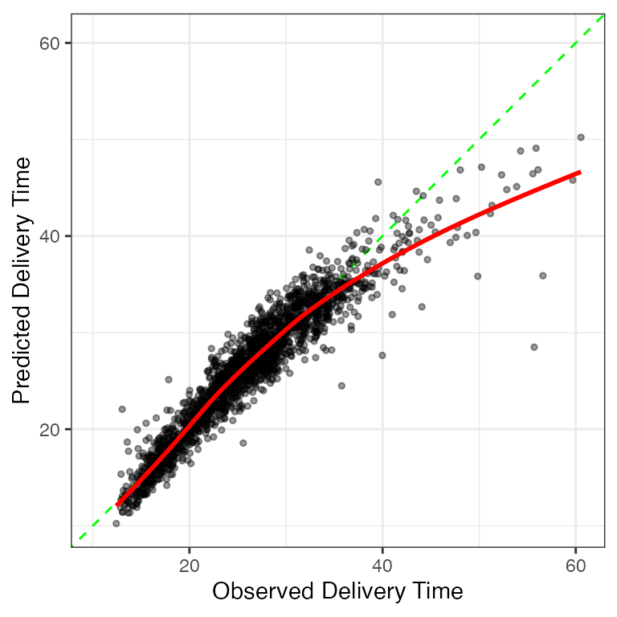
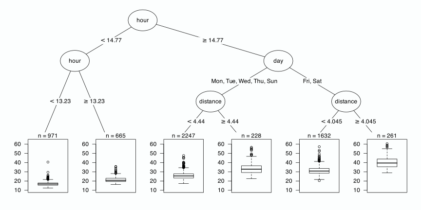
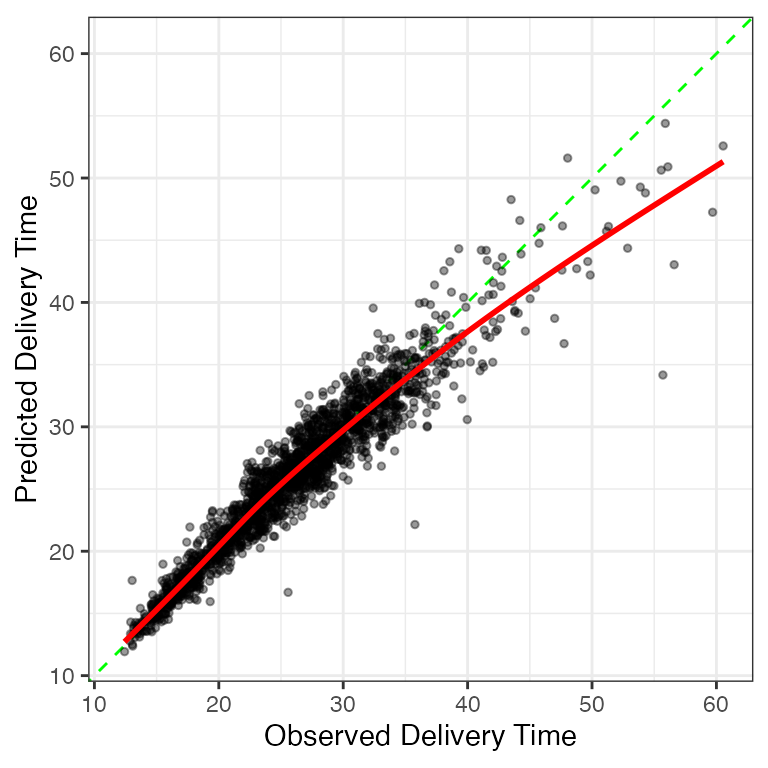
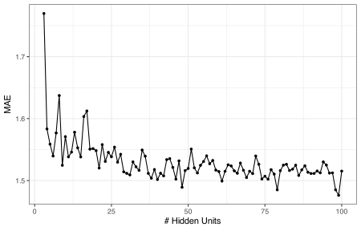
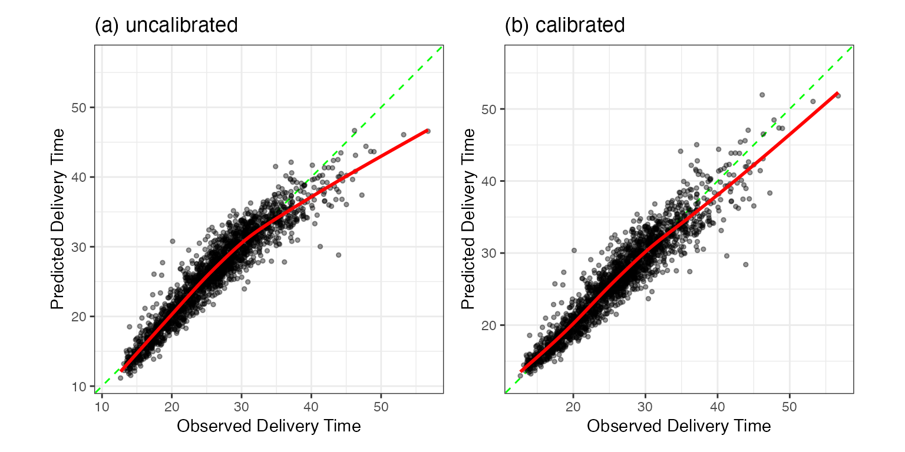
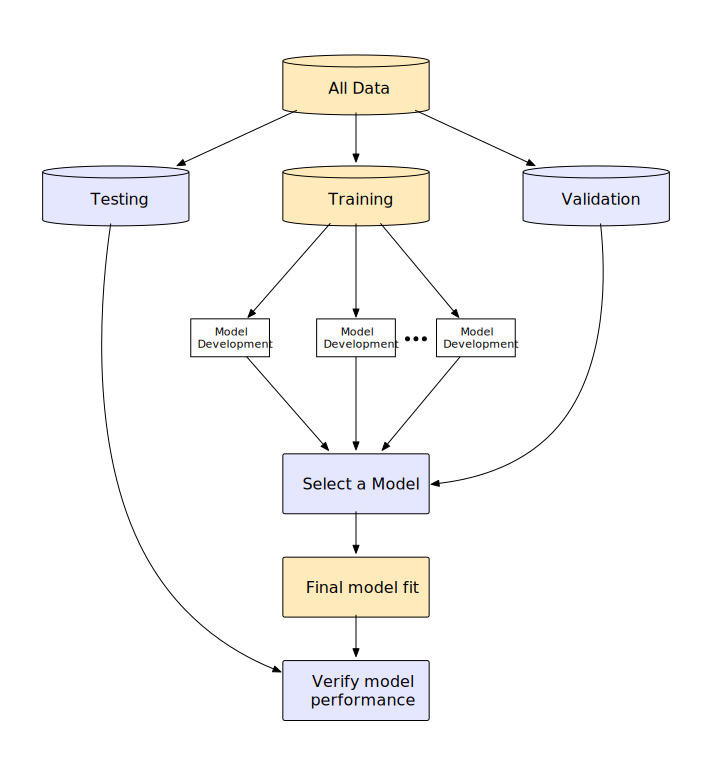
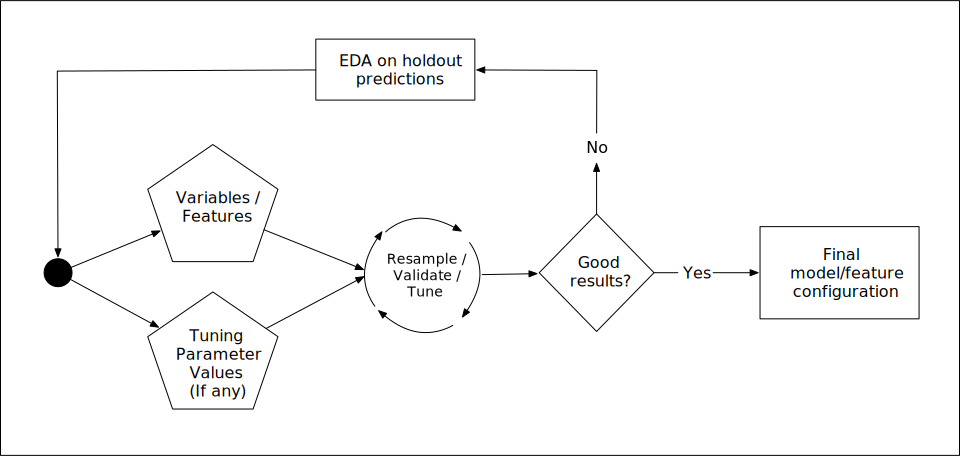

2 The Whole Game
This chapter is a self-contained case study. Many resources for teaching machine learning gloss over some crucial details that might appear to be tangential to the model. As a result, they omit parts that are critical to the overall project.
The notion of “the whole game” is to illustrate machine learning in a way that reflects the complexity of the entire process. Perkins (2010) uses this phrase in the context of learning baseball. Instead of focusing players on one or two key aspects of the game, it is better to be exposed (at some level) to everything. In his words, a smaller focus “was kind of like batting practice without knowing the whole game.”
Our goal is to provide a somewhat abbreviated, high-level overview to help readers understand the overall strategy before we get into the specific set of tactics that we might use. This chapter previews what is to come and sets the stage to discuss some important themes that may not be obvious at first glance.
We’ll avoid many details in this chapter by copiously referencing upcoming chapters.
2.1 Predicting Delivery Time
The illustrative example focuses on predicting the food delivery time (i.e., the time from the initial order to receiving the food). There is a collection of data containing 10,012 orders from a specific restaurant. The predictors, previously shown in Table 1.1, include:
- The time, in decimal hours, of the order.
- The day of the week for the order.
- The approximate distance between the restaurant and the delivery location.
- A set of 27 predictors that count the number of distinct menu items in the order.
The outcome is the time1 (in minutes).
The next section describes the process of splitting the overall data pool into different subsets and signifies the start of the modeling process. However, how we make that split depends on some aspects of the data. Specifically, it is a good idea to examine the distribution of our outcome data (i.e., delivery time) to determine how to randomly split the data2.
Figure 2.1 (panel (a)) uses a histogram to examine the distribution of the outcome data. It is right-skewed and there is a subset of long delivery times that stand out from the mainstream of the data. The most likely delivery time is about 27 minutes, but there is also a hint of a second mode a few minutes earlier.
This skewness might affect how we split the data and is discussed in the next section. Another important question is: should we model a transformed version of the delivery times? If we have large outlying values, the model might be inappropriately pulled to these values, often at the expense of the overall quality of fit. One approach is to model the logarithm of the times (as shown in Equation 1.1). Figure 2.1 (panel (b)) shows the distribution of the log (base 2) deliveries. It is more symmetric, and the potential second mode is more pronounced. This isn’t a bad idea, and the primary consequence is how we interpret some of the metrics that are used to quantify how well the model fits the data3. In the end, we decided to model the data in the original units but did try the analysis both ways (and did not find huge differences in the results).
2.2 Data Spending
An important aspect of machine learning is to use the right data at the right time. We don’t start modeling with the entire pool of data. As will be seen in ?sec-resampling, we need to reserve some data to evaluate the model and make sure that those data do not overlap with those used to fit the model.
Often, our data spending strategy is to split the data into at least two subsets:
- The training set is used to develop the model pipeline. It is used for investigating, fitting, and comparing them.
- The test set is a smaller fraction of the data that is only used at the very end to independently validate how well we did.
The training set is used for a lot of our activities. We do need to evaluate multiple model pipelines along the way. We reserve the test set for this function and should not use it for development. There are two main strategies for characterizing model efficacy during development.
The first is to resample the training set. This is an iterative computational tool to find good statistical estimates of model performance using the training set.
The other option is to initially split the data into three subsets: the training set, the testing set, and the validation set. The latter is another data partition, smaller than the training set, that is used for evaluating the model repeatedly during development.
Generally, we suggest using resampling unless the initial data pool is “sufficiently large.” For these data, 10,012 food orders is probably sufficient to choose a validation set over the resampling approach.
To split the data, we’ll allocate 60% for the training set and then use 20% for the validation set, and the remaining 20% for testing. The splitting will be conducted by stratification. To ensure that our delivery time distributions are approximately the same, it is temporarily “binned” into four quartiles. The three-way split is executed within each quartiles and the overall training/validation/testing sets are assembled by aggregating the corresponding data from the quartiles. As a result, the respective sample sizes are 6004/2004/2004 deliveries.
As previously stated, the majority of our time is spent with the training set samples. The first step in any model-building process is to understand the data, which can most easily be done through visualizations of the training set.
2.3 Exploratory Data Analysis
Our goal now is to determine if there are aspects of predictors that would affect how we provide them to the model. We should look at individual variables as well as combinations multiple variables.
To start, for the dense numeric predictors, how would we characterize their relationship to the outcome? Is it linear, nonlinear, or random? Let’s start with the distance predictor. Figure 2.2(a) shows the values with the “scatter plot smoother” fit. The line is a flexible nonlinear approach that can adapt to any apparent pattern in the plot4. First, the plot shows that the distance distribution is also right-skewed (although a separate histogram would better illustrate this). The smoother shows a slightly nonlinear trend, although the nonlinearity is mainly in the right tail of the distances and might be an artifact of the small sample size in that region. It is an informative variable that we can use in the model.

Panel (b) has a similar visualization for the order time. In this case, there is another nonlinear trend where the order increases with the hour, then peaks around 17:30, then begins to decrease. There is also an increase in delivery time variation as the order time approaches the peak.
The day of the week is visualized via box plots in panel (c). There is an increasing trend in both mean and variation as we move from Monday to Friday/Saturday, then a decrease on Sunday. Again, this appears to be an important predictor.
These three panels show relationships between individual predictors and delivery times. It is possible that multiple predictors can act in concert; their effect on the outcome occurs jointly. Panel (d) of Figure 2.2 shows that there is an interaction effect between the day and hour of the order. Mondays and Tuesdays have shorter delivery times that don’t change much over hours. Conversely, on Fridays and Saturdays, the delivery times are generally longer, with much higher peaks. This might explain the increase in delivery time variation that was seen in Panel (b). Now that we know of the existence of this interaction, we might add additional model terms to help the model understand and exploit this pattern in the training set.
For the 27 itemized frequency counts, we might want to know if there was a change in delivery time when a specific item was in the order (relative to those where it is not purchased). To do this, mean delivery times were computed for orders with and without the item. The ratio of these times was computed and then converted to the percent increase in time. This is used to quantify the effect of item on delivery time. We’d also like to know what the variation is on this statistic and a technique called the bootstrap (Davison and Hinkley 1997) was used to create 90% confidence intervals for the ratio. Figure 2.3 shows the results.

There is a subset of items that increase the delivery time (relative to the experimental noise), many that seem irrelevant, and one that decreases the time.
More investigations into the data would be pursued to better understand the data and help us with feature engineering. For brevity, we’ll stop here and introduce three ML models.
2.4 Model Development
Which model to use? There is a multitude of tools that can be used to represent and predict these data. We’ll illustrate three in this section and the essential concepts to consider along the way.
Before proceeding, we need to pick a performance metric. This is used to quantify how well the model fits the data. For any model fit, the residual (usually denoted as \(\epsilon\), also called the error) is the difference between the model prediction and the observed outcome. We’d like our model to produce residuals near zero. One metric5 is the mean absolute error (MAE). For a data set with \(n\) data points, the equation is
\[ MAE = \frac{1}{n}\sum_{i=1}^n |y_i - \hat{y}_i| = \frac{1}{n}\sum_{i=1}^n |\epsilon_i| \tag{2.1}\]
where \(\hat{y}\) is the predicted numeric outcome value and \(\epsilon\) is the model error. The MAE units are the same as the outcome which, in this case, is minutes. We desire to minimize this statistic.
To get started, we’ll use a basic linear model for these data.
Linear Regression
Linear regression is probably the most well-known statistical model in history. It can predict a numeric outcome using one or more predictors using the equation:
\[ y_i = \beta_0 + \beta_1x_{i1} + \beta_2x_{i2} + \ldots + \beta_px_{ip} + \epsilon_i \tag{2.2}\]
where \(y_i\) is the outcome for the \(i^{th}\) data point (out of \(n_{tr}\)), and \(x_{ij}\) is value for the \(j^{th}\) predictor (out of \(p\)).
For Equation 2.2, there are many ways to estimate the model parameters (\(\beta\)’s). Ordinary least squares is used most often. It finds the values of the \(\beta_j\) that that minimize sum of squared errors (SSE). ?sec-reg-linear discusses several other ways to estimate the model parameters that use other criteria (variations of the SSE).
The main assumptions about the data for ordinary least squares are that they are independent and identically distributed. Given what we know about the problem, both assumptions are at least mildly incorrect. Orders are being processed simultaneously (affecting independence), and our visualizations have indicated that there is an increase in variation with the mean (i.e., not identically distributed). However, we are most interested in prediction here, so we can often overlook slight to moderate violations of these assumptions6
What are our \(x_{ij}\) values in Equation 2.2? We can’t give the model equations values of "Monday" or "Friday"; OLS requires numbers in its equations. A simple workaround is to create binary indicator variables for six of the seven days of the week. For example, the indicator for Friday would have a value of one for orders placed on a Friday and zero otherwise7.
Also, for Equation 2.2, what do we do about the numeric predictors that appear to have nonlinear trends? We can emulate the approach taken by the smoothing methods and augment the predictor columns. Equation 2.2 shows that linear regression is linear in the parameters (not the predictors). We can add terms such as \(x_{ij} = distance_i^2\) to allow the fit to be nonlinear. An effective tool for enabling nonlinear trends is spline functions8. These are special polynomial terms. For example, we could represent that original predictor with 10 spline terms (i.e., columns in the data) for the order hour. As we add more terms, the model fit has increased capacity to be nonlinear. We’ll use 10 separate splines for both distance and the order hour (in lieu of the original data columns.)
How do we encode the interaction seen in Figure 2.2(d)? We have six indicator columns for the order day and ten spline columns for the order hour. We can facilitate having different nonlinear hour trends for each day by making 60 cross-product terms. For example, the interactions for Fridays would multiply each of the ten spline terms by the binary indicator associated with Fridays.
These feature engineering operations result in a model with \(p = 114\) \(\beta\) parameters. We fit this model to the training set to estimate the model parameters. To evaluate it, we use the trained model to predict the validation set, and these predictions are the substrate to compute the MAE. For this model, the validation set MAE is 1.609 (i.e., 1 minute and 36 seconds). If we think of MAE as an average error, this doesn’t seem too bad. However, what does this look like? Let’s plot the observed times against predicted values to get a better sense of how well this model did. Figure 2.4 has the results which also feature a scatter plot smoother.

The best case would be that the points arrange themselves tightly around the diagonal line. The model slightly under-predicts for very rapid deliveries but substantially under-predicts for times greater than 40 minutes. However, overall, the model works well for the majority of the deliveries.
From here, our next step would be to investigate poorly predicted samples and determine if there is some commonality to them. For example, are they short distances that are ordered late on a Friday, etc? If there appears to be a pattern, we would add additional model terms to compensate for the flaw and see if the validation set MAE decreases. We would iterate between exploratory analysis of the residuals, adding or subtracting features, then refitting the model.
For illustration, we stop here and take a look at very different model.
Rule-Based Ensemble
Cubist is a rule-based ensemble method. It creates a rule set by first generating a regression tree that is composed of a hierarchical set of if/then statements9. Figure 2.5 shows a simple tree for our data. A set of splits on different predictors results in six terminal nodes (at the bottom of the tree). A rule is a distinct path through the tree to a terminal node. For example, Node 11 in the figure has the corresponding rule: hour >= 14.77 & day in {Fri, Sat} & distance >= 4.045. For each rule, Cubist fits a linear regression to the data that the rule covers (\(n = 261\) for Node 11). It builds new rule sets sequentially and uses many rules/regression equations to predict new samples.

The method isolates different parts of the predictor space and models the data using linear functions. The local nature of the rules enables the model to emulate nonlinear functions easily. When a rule consists of multiple predictors, this constitutes an interaction effect. Additionally, the data preprocessing requirements are minimal: it can internally account for any missing predictor values, and there is no need to convert categorical predictors into binary indicator columns, and so on.
When fit to the training set, the Cubist model created an ensemble with 105,327 rules. On average, the rules consisted of 2.7 variables and the the regression models contained 12.7 predictors. Two example rules, and their regression models, were:
if
hour <= 14.252
day in {Fri, Sat}
then
outcome = -23.039 + 2.85 hour + 1.25 distance + 0.4 item_24
+ 0.4 item_08 + 0.6 item_01 + 0.6 item_10 + 0.5 item_21
+ 0.3 item_09 + 0.4 item_23 + 0.2 item_03 + 0.2 item_06and
if
hour > 15.828
hour <= 18.395
distance <= 4.35
item_10 > 0
day = Thu
then
outcome = 11.29956 + 4.24 distance + 14.3 item_01 + 4.3 item_10
+ 2.1 item_02 + 0.03 hourThese two examples are reasonable and understandable. However, blending so many rules means that this model is a complex, black-box model. For example, the first data point in the validation set is affected by 5,916 rules (about 6% of the total ensemble).
Does this complexity help? The validation set estimated MAE at 1 minute and 24 seconds, which is an improvement over the linear regression model. Figure 2.6 visualizes the observed and predicted plot. The model under-predicts fewer points with long delivery times than the previous model but does contain a few very large residuals.

Would this model have benefited from using the feature set from the linear regression analysis? Not really. Refitting with those predictors had an MAE of 1 minute and 26 seconds. In this particular case, the original Cubist was able to estimate nonlinear trends and interactions without additional feature engineering.
There is more that we can do with the Cubist model but, in this initial model screening phase, we should focus our efforts on evaluating a disparate set of models and features to understand what works, what doesn’t work, and the difficulty level of the problem. Let’s try one additional model.
Neural Network
A neural network is a highly nonlinear modeling technique. They relate the predictors to the outcome through intermediate substructures, called layers, that contain hidden units. The hidden units allow the predictors to affect the outcomes differently10 allowing the model to isolate essential patterns in the data. As the number of hidden units (or layers of hidden units) increases, so does the complexity of the model. We’ll only consider a single layer network with multiple hidden units for these data.
Neural networks, like linear regression, require numbers as inputs. We’ll convert the day of the week predictor to indicators. Additionally, the model requires that all of the predictors be in the same units. There are a few ways to accomplish this. First, we will compute the training set mean and standard deviation of each feature. To standardize them we subtract the mean and divide the result by the standard deviation. As a result, all features have a zero mean and a unit standard deviation.
One question about this model: how many hidden units should we use11? This decision will determine the complexity of the model. As models become model complex, they have more capacity to find complicated relationships between the predictors and response. However, added complexity adds to the risk of overfitting. This situation, discussed in ?sec-model-complexity-and-overfitting, occurs when a model fits exceptionally well to the training data but fails for new data by finding patterns in the training data that are artifacts and do not generalize for other data sets. How should we choose the number of hidden units?
Unfortunately, no equation can directly compute an estimate the number of units from the data. Values such as these are referred to as tuning parameters or hyperparameters. However, one solution is to extend the resampling process previously shown for the linear regression and Cubist models. We will consider a candidate set of tuning parameter values ranging from 3 to 100 hidden units. We’ll fit a model to the training set for each of these 98 values and use the validation set MAE values to select an appropriate value. The results of this process is shown in Figure 2.7.

A small number of hidden units performs poorly due to underfitting (i.e., insufficient complexity). Adding more improves the situation and, while the numerically best result corresponds to a value of 99, there is appreciable noise in the MAE values12 . Eventually, adding too much complexity will either result in the MAE values becoming larger due to overfitting or will drastically increase the time to fit each model. The pattern shows a plateau of values with a similar MAE is the absolute optimal value. Given the noise in the system, we’ll select a value of 48 hidden units, by determining the least complex model that is within 1% of the numerically best MAE. The MAE associated with the selected candidate value13 was 1 minute and 29 seconds (but is likely to be closer to 1 minute and 31 seconds, given the noise in Figure 2.7).
Figure 2.8 shows the familiar plot of the observed and predicted delivery times. There are fewer large residuals than the Cubist model but the underfitting for longer delivery times appears more pronounced. There is also a hint of under-predicted times for fast deliveries.

These results suggest that the Cubist and neural network models have roughly equivocal performance14. Like Cubist, the finalized model is very complex; it is a highly nonlinear regression with 5,705,947 model parameters (i.e., slopes and intercepts).
2.5 Choosing Between Model
There are a variety of criteria used to rank and compare model fits. Obviously, performance is important. Also, it is good practice to choose a model that is as simplistic as possible (subject to having acceptable performance). There are other practical factors too. If a model is to be deployed, the size of the files(s) required to automate predictions can be a constraint. There may also be data constraints; which predictors are easy or inexpensive to obtain? Does the number of predictors affect how quickly predictions can be made?
While prediction is the focus for ML models, we often have to explain the model and/or predicted values to consumers. While we can develop explainers for any model, some types are easier to explain than others.
For this chapter, we have three models whose MAE values are within about 12 seconds of one another. Each has the same deficiency: they all significantly underpredict long delivery times. In fact, a few poor predictions may be a limiting factor for any regression metric; it might be impossible for one model’s MAE to really stand out from the others.
We’ll select the linear regression model as our final model due to its relative simplicity and linear structure.
2.6 Calibration
There is one option for remedying the systematic underprediction of long delivery times. ?sec-reg-calibration describes calibration methods that might be able to correct such issues. To do so, we use the held out predictions to estimate the average unwanted trend and remove it from new predictions. For the linear regression results, the estimated average trend is almost identical to the smooth line shown in Figure 2.4.
For our test set predictions, we’ll remove this trend and, hopefully, this will recenter the long predictions to be closer to the diagonal line.
2.7 Test Set Results
We can predict the test set using the linear regression fit from the training set. Recall that the validation set MAE was 1 minute and 36 seconds. Without the additional calibration, the test set value was also 1 minute and 36 seconds. The similarity of these results gives us confidence that the performance statistics we estimated during development are consistent with the test set. The test set plot of the predictions is shown in Figure 2.9(a).
The calibration results are shown in panel (b). There does appear to be an improvement in long delivery times; these are closer to the diagonal line. The MAE value is slightly improved: 1 minute and 32 seconds. The small difference in these results and the similar MAE values across models indicates that the few large residuals are probably the gating factor for these data.

At this point, we should spend a fair amount of time documenting the model and our development process. It might be helpful to employ inferential analyses to explain to interested parties which model components were most important (e.g., how much the interaction or nonlinear terms improve the model, etc.). It is very important to document where the model does not work well, its intended use, and the boundaries of the training set. Finally, if the model is deployed, we should also monitor its effectiveness over time and also understand if the sample population is changing over time too.
The next section accentuates important aspects of this case study.
2.8 Themes
At a high level, let’s review the process that we just used to create a model; Figure 2.10 highlights several themes15. The overall process involves initial data splitting, model development, then model selection, and validation. We’ll look at each of these in turn to discuss important points.

Data Spending
Although discussed in ?sec-initial-data-splitting, how we allocate data to specific tasks (e.g., model building, evaluating performance, etc.) is an essential aspect of modeling. In our analysis, a minority of the data were explicitly allocated to measure how well the model worked. The test set is meant to be unbiased since it was never used to develop the model. This philosophy of empirical validation is a crucial feature for judging how models function.
The majority of the data ends up in the training set. The core activities of creating, optimizing, and selecting are accomplished with these data.
Figure 2.10 highlights how we use the right data at the right time. A lack of a data usage methodology (or an inappropriate one) can lead to having a false sense of the quality of the model.
For example, when the linear regression model was calibrated, we chose to use the held-out samples as the substrate for estimating the unwanted trend. We could have used the re-predicted training set data but, as will be discussed in ?sec-model-complexity-and-overfitting, these values can be unrealistically optimistic. Also, we chose not to compute the MAE on the held-out predictions after they were used to estimate the calibration. This dual use of the same data would result in an MAE value that is smaller than it should be. There are other ways of estimating the utility of the calibration prior to the test set; these are discussed in @?sec-reg-calibration.
Investigate Many Options
For the delivery data, three different models were evaluated. It is our experience that some modeling practitioners have a favorite model that is relied on indiscriminately (boosted trees immediately come to mind). The “No Free Lunch” Theorem (Wolpert 1996) argues that, without substantive information about the modeling problem and data, no single model will always do better than any other model. Because of this, a strong case can be made to try various techniques and then determine which to focus on. In our example, simple data visualizations elucidated the relationships between the outcome and the predictors. Given this knowledge, we might exclude some models from consideration, but there is still a wide variety of techniques to evaluate.
For individual models, Figure 2.11 summarizes the cyclic process of speculation, configuration, and validation of model parameters and features. For these data, we discovered most of the important trends prior to our first model fit. As previously mentioned, we would cycle through a few rounds where we try to make improvments for each of the models.

For novel data sets, it is a challenge to know a priori what good choices are for tuning parameters, feature engineering methods, and predictors. The modeler must iterate using choices informed by their experience and knowledge of the problem.
Predictor Representations
This example revolves around a small set of predictors. In most situations, there will be numerous predictors of different types (e.g., quantitative, qualitative, etc.). It is unclear which predictors should be included in the model for new modeling projects and how they should be represented.
When considering how to approach a modeling project, the stereotype focuses on which new, fancy model to adopt. The reality is that many of the most effective decisions that users must confront are which predictors to use and in what format. Thoughtfully adding the right feature representations often obviates the need (and overhead and risks) for complex models. That is one of the lessons from this particular data set.
We’ll put the feature engineering process on equal footing with model training For this reason, Figure 2.11 describes the cyclic nature of developing a single model and its corresponding features. These two processes go hand-in-hand.
While Cubist and the neural network were able to internally determine the more elaborate patterns in the data, our discovery of these same motifs has a higher value. We learned something about the nature of the data and can relate them to the model (via feature engineering) and the end-users. In fact, the day-to-day users of the data are the best resources for feature engineering.
Model Selection
At some point in the process, a specific model pipeline must be chosen. This chapter demonstrated two types of selection. First, we chose some models over others: the linear regression model did as well as more complex models and was the final selection. In this case, we decided between model pipelines. There was also a second type of model selection shown. The number of hidden units for the neural network was determined by trying different values and assessing the results. This was also model selection, where we decided on the configuration of a neural network (as defined by the number of hidden units). In this case, we selected within different neural networks.
In either case, we relied on data separate from the training set to produce quantitative efficacy assessments to help choose. This book aims to help the user gain intuition regarding the strengths and weaknesses of different models to make informed decisions.
Measuring Performance
Before using the test set, two techniques were used to determine the model’s effectiveness. First, quantitative assessments of statistics (i.e., MAE) from the validation set help the user understand how each technique would perform on new data. The other tool was to create simple visualizations of a model, such as plotting the observed and predicted values, to discover areas of the data where the model does particularly well or poorly. This qualitative information is lost when the model is gauged only using summary statistics and is critical for improving models. There are many more visualization methods for displaying the outcomes, their predictions, and other data. The figures shown here are pretty simplistic.
Note that almost all of our approaches for model evaluation are data-driven in a way where we determine if the predicted values are “close” to the actual values. This focus on empirical validation is critical in proving that a model pipeline is fit for purpose. Our general mantra is
Important
Always have a separate piece of data that can contradict what you believe.
For models with parametric assumptions, it is a good idea to check these too, primarily if a model will also be used for inference. However, before considering questions regarding theoretical assumptions, empirical validation should be used to ensure that the model can explain the data well enough to be worth our inferences. For example, if our validation set MAE was around 15 minutes, the model predictions would not show much fidelity to the actual times. Any inferences generated from such a model might be suspect.
2.9 Summary
At face value, model building appears straightforward: pick a modeling technique, plug in the data, and generate a prediction. While this approach will yield a predictive model, it will likely not generate a reliable, trustworthy model. To achieve this we must first understand the data and the objective of the modeling. We finally proceed to building, evaluating, optimizing, and selecting models after these steps.
Chapter References
Davison, A, and D Hinkley. 1997. Bootstrap Methods and Their Application. Cambridge University Press.
Perkins, D. 2010. Making Learning Whole. Wiley.
Wolpert, D. 1996. “The Lack of a Priori Distinctions Between Learning Algorithms.” Neural Computation 8 (7): 1341–90.